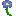

Vertigoes is a small Forge Minecraft mod that aims to.. oh well, I'm just adding neat random things that I find useful and maybe you'd like!
-
Here are some links:
- CurseForge
- Modrinth
- GitHub
Contents
Myosotis
with an eye of ender can be made into the Ender Myosotis
Ender Myosotis
Primal Pearl
The Plant-life Pearl
benefits on right-click you can put a special Plant Essence block with the pearl indefinitely (useful for scaffolding)
The Animal-life Pearl
benefits while in hotbar, you deal extra damage to undead mobs (equal to Smite IV)
disabled if you kill a Villager or an animal
The Death Pearl
benefits while in main hand, undead creatures can't damage you (still take knockback)
disabled if you cure a Zombie Villager
The Aquatic Pearl
benefits while in main hand, gain Water Breathing
disabled if you kill any fish/water friendly creature
The Unstoppable Force
breaking a Beacon with it drops instead a Heart of Glass
Heart of Glass
The potion effect can be changed by using a Lingering Potion of the desired effect on it.